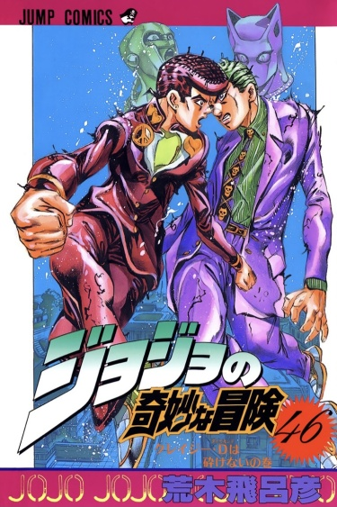

Тип: Манга
Тома: 18
Главы: 174
Статус: 1992-1995 г.г.
Жанры: Экшен Сёнен Сверхъестественное
По-японски: ジョジョの奇妙な冒険 ダイヤモンドは砕けない
По-английски: JoJo's Bizarre Adventure Part 4: Diamond Is Unbreakable

Несокрушимый алмаз/Diamond Is Unbreakable
Информация
Описание
Это четвёртая история о невероятных приключениях ДжоДжо. Городок на побережье Морио столкнулся с «Луком и стрелой», таинственным древним артефактом, который пробуждает скрытые возможности в преступниках и обычных горожанах. Пока город страдает от огромного количества недавно появившихся владельцев подобной силы, в Морио начинают пропадать девушки. Старшеклассник Джоскэ Хигашиката и его друзья принимаются за расследование этих странных событий и ищут преступника.
Персонажи
Аниме
Читать